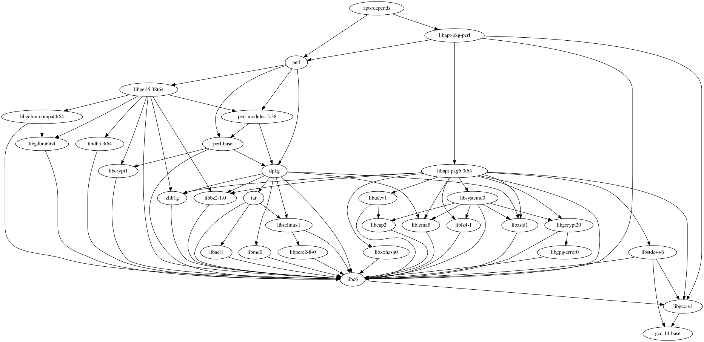
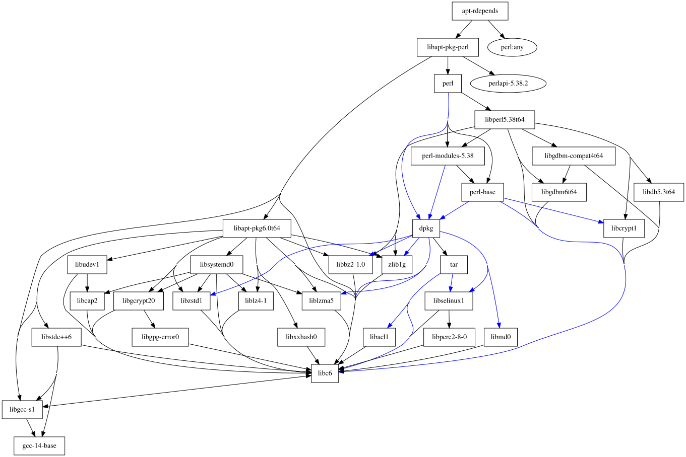
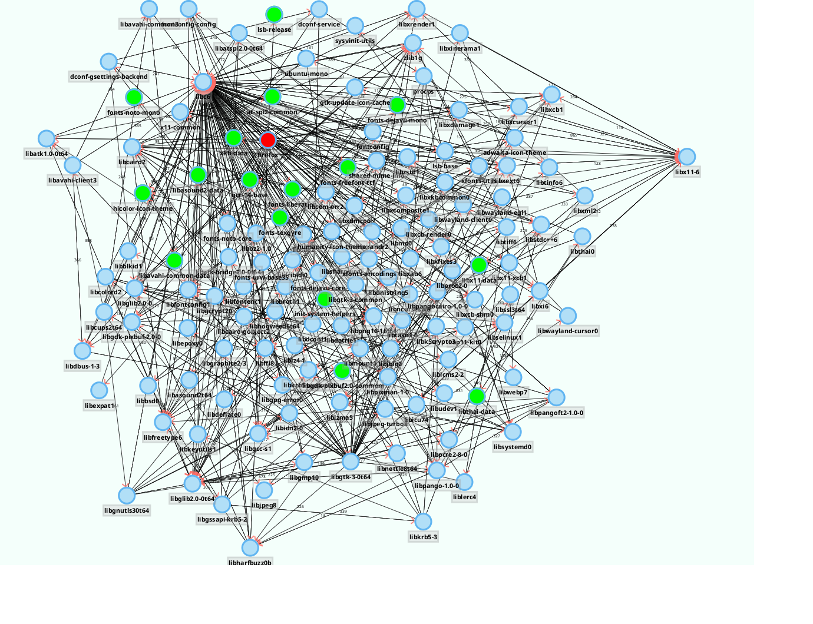

In meinem $dayjob kam neulich die Frage auf, ob es möglich wäre, die aktuelle Softwareinstallation eines Linux-Systems als Software Bill of Materials (SBOM) zu exportieren.
Zunächst ging ich also auf die Suche, wie und woher man diese Informationen bekommen könnte. Prinzipiell ist es ja so, dass diese Informationen aus dem Dependency-Management-System des jeweiligen Entwicklungsprojektes bekommen kann - Bei Java also zum Beispiel aus Maven, bei Python beispielweise mitrtels pip.
Hier handelt es sich jedoch um eine Linuxdistribution. Diese haben heutzutage meistens eine Paketverwaltung - bei Debian ist das dpkg bzw. apt - andere übliche Verdächtige sind dnf, `yum und so weiter. Wenn man die dort enthaltenen Informationen extrahieren könnte, könnte man daraus die Datengrundlage zur Generierung von SBOMs schaffen - der Rest wäre trivial: Diese Daten müssten dann nur noch ins Zielformat transformiert werden.
Ich hatte mich bisher noch nie so tiefgreifend mit den Paketmenegern beschäftigt und stellte erfreut fest, dass bei Debian diese Informationen nicht kompliziert über Tools zusammengesucht werden müssen - bei Debian-basierten Distributionen liegen diese Informationen in einer Text-Datenbank vor, die unter /var/lib/dpkg/status zu finden ist. Diese lässt sich auf einfache Art und Weise parsen und enthält alle Daten, die für die Erstellung einer SBOM nötig sind.
An diesem Punkt angekommen schweifte ich ein wenig ab: Ich fragte mich, ob man die Abhängigkeiten der Pakete und Komponenten untereinander nicht auf einfache Art und Weise graphisch darstellen könnte. Kann man - mein erster Versuch war die Benutzung von Graphviz. Ein Beispiel ist hier abgebildet - dies sind die Abhängigkeiten des Pakets apt-rdepends, allerdings nur die Namen der Komponenten, nicht die Versionen. Diese und andere Informationen ebenfalls hinzuzufügen wäre trivial.

Abhängigkeiten des Pakets apt-rdepends unter Ubuntu 24.04Diese Darstellung wurde mittels
cat /tmp/model.dot | dot -Tsvg > /tmp/dependencies.svg&& xdg-open /tmp/dependencies.svg
erstellt.
Dafür müsste man keinen Code schreiben - das hier analysierte Anwendung apt-rdepends kann das bereits alleine, wie das Resultat von
apt-rdepends --dotty apt-rdepends | dot -Tsvg > /tmp/apt-rdepends.svg&& xdg-open /tmp/apt-rdepends.svg
zeigt:

Abhängigkeiten des Pakets apt-rdepends unter Ubuntu 24.04 visualisiert mittels apt-rdependsAn diesem Punkt angekommen kam mir der Gedanke, dass eine solche Visualisierung gut und schön ist - wie wäre es aber, wenn man den Graphen ein wenig interaktiver gestalten wollte. Es existieren verschiedene Bibliotheken zur Visualisierung von Graphstrukturen, die entsprechende Algorithmen zum automatischen Layout von Graphen anbieten. Ich benutze unter anderem eine davon um komplexe Datenmodelle in der sQLshell zu visualisieren. Der hier verwendete Algorithmus ist aber statisch - man würde dasselbe Eregbnis ereichen, wie auch mit den beiden bereits gezeigten Varianten. Es existieren aber auch dynamische Algorithmen, die einen schrittweisen, kontinuierlichen Ansatz verfolgen und bei dem man den Vorgang der Entfaltung des Graphen visuell verfolgen kann. Diese Algorithmen erlauben es auch, beliebige Knoten und Kanten hinzuzufügen und zu entfernen, wobei das Layout dynamisch an die neuen Gegebenheiten angepasst wird. Eine solche Bibliothek ist (JavaFX) SmartGraph.
Ich probierte sie aus - dankenswerterweise kann man JavaFX-Komponenten ja in Swing-Applikationen einsetzen - und war mit dem Ergebnis noch nicht ganz zufrieden: Der implementierte Algorithmus tendierte (speziell bei Graphen mit vielen Elementen) dazu, instabil zu werden. Ich recherchierte weiter und stieß auf graphstream - ebenfalls eine Java-Bibliothek, die auch über ein direktes Swing-Interface verfügte. Diese Implementierung funktionierte auch mit komplexen Graphen hervorragend. Ich stellte mir jedoch die Frage, warum die erste Implementierung nicht so gut funktionierte wie diese hier. In der reichhaltigen Dokumentation von graphstream stieß ich auf den Link zur Veröffentlichung des benutzten Algorithmus, wo nicht nur der Mechanismus sondern auch funktionierende Standardwerte für die Parameter angegeben wurden.
Diesen Algorithmus wollte ich für die erste Bibliothek nachimplementieren (diese erlaubt es nämlich, eigene Algorithmen zu implementieren und zu nutzen). Ich kopierte also einen der bestehenden und begann damit, den aus dem Artikel einzufügen. Dabei musste ich erstaunt feststellen, dass dieser bestehende genau der aus dem Artikel war - allerdings waren die Standardwerte für die Parameter weit von den im Artikel angegebenen entfernt. Ich machte also einen erneuten Versuch und siehe da - auch diese Bibliothek konnte plötzlich mit komplexen Graphen umgehen. Als Beweis soll hier die Darstellung der Paketabhängigkeiten von firefox dienen:

Abhängigkeiten des Pakets firefox unter Ubuntu 24.04 visualisiert mittels JavaFX SmartGraphAls ich an diesem Punkt angekommen war, realisierte ich einige Punkte, die mich in der Implementierung der Bibliothek noch störten: Ich stellte dafür jeweils ein Ticket im Projekt ein, forkte es und implementierte die benötigten Anpassungen - der Pull-request wartet derzeit noch auf die Bearbeitung...
Der Quelltext für die Implementierung mit der die oben gezeigte Visualisierung erzeugt wurde ist hier zu finden.
Artikel, die hierher verlinken
Visualisierung von Datenmodellen als gerichtete Graphen
12.10.2024
Ich habe - motiviert durch meine Experimente zur Visualisierung von Paketabhängigkeiten in Linux-Installationen als interaktive Graphen - versucht, relationale Datenmodelle in ähnlicher Form zu visualisieren und dazu zwei Plugins für die sQLshell geschrieben.


Vor 5 Jahren hier im Blog
-
CI/CD mit shellcheck
13.10.2019
Ich habe mich entschlossen, in meinen diversen Shell-Projekten shellcheck als Mittel zur Qualitätssicherung einzusetzen.
Weiterlesen...
Tags
Android Basteln C und C++ Chaos Datenbanken Docker dWb+ ESP Wifi Garten Geo Git(lab|hub) Go GUI Gui Hardware Java Jupyter Komponenten Links Linux Markdown Markup Music Numerik PKI-X.509-CA Python QBrowser Rants Raspi Revisited Security Software-Test sQLshell TeleGrafana Verschiedenes Video Virtualisierung Windows Upcoming...
Neueste Artikel
- Visualisierung von Datenmodellen als gerichtete Graphen
Ich habe - motiviert durch meine Experimente zur Visualisierung von Paketabhängigkeiten in Linux-Installationen als interaktive Graphen - versucht, relationale Datenmodelle in ähnlicher Form zu visualisieren und dazu zwei Plugins für die sQLshell geschrieben.
Weiterlesen... - Carl Sagan - Christmas Lectures at the Royal Institution
Die Royal Institution hat in ihren Schätzen gegraben und die Christmas Lectures von Carl Sagan auf Youtube nochmals veröffentlicht. Meiner Ansicht nach unbedingt lohnenswert für alle, die Englisch verstehen!
Weiterlesen... - Turing complete LLMs
Ich beschäftige mich mit Cybersecurity auch beruflich - während mein Fokus privat und als Hobby hier eher auf crypto und im Speziellen auf PKI liegt interessiere ich mich beruflich für secure Softwareentwicklung und Minimierung von Angriffsoberflächen.
Weiterlesen...
Manche nennen es Blog, manche Web-Seite - ich schreibe hier hin und wieder über meine Erlebnisse, Rückschläge und Erleuchtungen bei meinen Hobbies.
Wer daran teilhaben und eventuell sogar davon profitieren möchte, muß damit leben, daß ich hin und wieder kleine Ausflüge in Bereiche mache, die nichts mit IT, Administration oder Softwareentwicklung zu tun haben.
Ich wünsche allen Lesern viel Spaß und hin und wieder einen kleinen AHA!-Effekt...
PS: Meine öffentlichen GitHub-Repositories findet man hier - meine öffentlichen GitLab-Repositories finden sich dagegen hier.